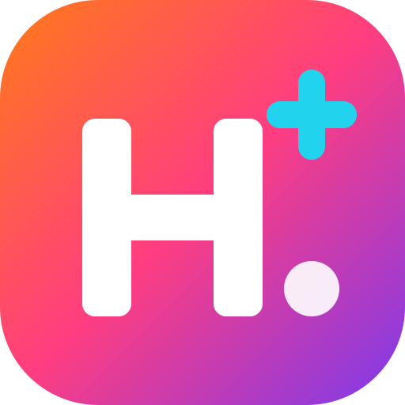

Style « appli » : un H dans un carré arrondi coloré, le « + » en cyan.
Sceau rond « HI+ » : les initiales H et I, et le « + ». Plus institutionnel.
Minimaliste : la barre du H est remplacée par un « + ». Moderne, très lisible en petit.